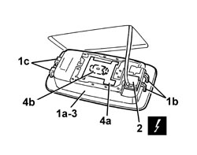
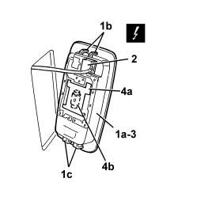

7040G30 BOOT LIGHT BULB HOLDER - R.R.
- Path
- Procedures > 70 FITTINGS > 7040 BODY INTERIOR FITTINGS AND TRIM > 7040G VEHICLE COMPARTMENT LIGHTING SYSTEM > 7040G30 BOOT LIGHT BULB HOLDER - R.R.
- Kind
- repair procedure (removal / refitting; the operation number is the code)
- Applies to
- all engines; all production periods
- Interactive page
- https://sloeber94.github.io/elrnDB-aBrrSpdr/en/#/946002630
Applies to: all engines; all production periods
 Removing
Removing
 Refitting
Refitting- Open the tailgate.
1. Release the bulb holder (1a) releasing the retainers (1b) and (1c).
2. Disconnect the electrical connection.
3. Keep the bulb holder.
4. If necessary, lift up the flap (4a) and remove the bulb (4b), releasing it from the side retainers.

Applies to: all engines; all production periods
Refitting
Removing- Check that the bulb holder and the bulb are not damaged.
- If removed, fit the bulb in place attaching it to the side retainers, then close the flap.
- Connect the electrical connection.
- Fit the bulb holder and attach the retainers.
- Check that the courtesy light is working.
- Close the tailgate.
Applies to: engines: 2.2 JTS, 3.2 JTS; all production periods; only with equipment: Spider
Removing
Refitting- Open the boot lid.
1. Release the bulb holder (1a) releasing the retainers (1b) and (1c).
2. Detach the electrical connection.
3. Keep the bulb holder.
4. If necessary, lift up the flap (4a) and remove the bulb (4b), releasing it from the side retainers.

Applies to: engines: 2.2 JTS, 3.2 JTS; all production periods; only with equipment: Spider
Refitting
Removing- Check that the bulb holder and the bulb are not damaged.
- If removed, fit the bulb in place attaching it to the side retainers, then close the flap.
- Attach the electrical connection.
- Fit the bulb holder and attach the retainers.
- Check that the courtesy light is working.
- Close the boot lid.
Topics linked from this page (1)
Topics that link to this page (40)
- 5010C60 LH OR RH REAR AIR OUTLET VENT (ONE) - R.R repair procedure (removal / refitting; the operation number is the code) · all engines; all production periods
- 5505B55 TAILGATE WIRING - R.R. repair procedure (removal / refitting; the operation number is the code) · all engines; all production periods
- 5570T27 AERIAL SUPPORT - R.R repair procedure (removal / refitting; the operation number is the code) · all engines; all production periods
- 5570T61 MULTI-FUNCTION AERIAL - R.R. repair procedure (removal / refitting; the operation number is the code) · all engines; all production periods
- 5570T96 REAR SIDE SPEAKER (ONE), LEFT OR RIGHT- R.R repair procedure (removal / refitting; the operation number is the code) · all engines; all production periods
- 5580C40 SIDE BAG SENSOR (ONE), LH OR RH - R.R. repair procedure (removal / refitting; the operation number is the code) · all engines; all production periods
- 5580C50 WINDOW BAG MODULE (ONE) LH OR RH - R.R repair procedure (removal / refitting; the operation number is the code) · all engines; all production periods
- 5580T40 BOSE SOUND SYSTEM SUBWOOFER - R.R. repair procedure (removal / refitting; the operation number is the code) · all engines; all production periods
- 5580T42 BOSE SOUND SYSTEM AMPLIFIER - R.R. repair procedure (removal / refitting; the operation number is the code) · all engines; all production periods
- 7015A14 TAILGATE - ADJUST CENTRING AND PROFILE - INCLUDES HINGE AND COMPARTMENT SEAL ADAPTATION repair procedure (removal / refitting; the operation number is the code) · all engines; all production periods
- 7025B34 BOOT LID EMERGENCY OPENING CONTROL - R.R. repair procedure (removal / refitting; the operation number is the code) · engines: 2.2 JTS, 3.2 JTS; all production periods
- 7030L10 TRANSPARENT ROOF PANEL - R.R. repair procedure (removal / refitting; the operation number is the code) · all engines; all production periods
- 7030L11 TRANSPARENT ROOF PANEL - R.R. FOR VERSIONS WITH SUN BLIND repair procedure (removal / refitting; the operation number is the code) · all engines; all production periods
- 7030L12 TRANSPARENT ROOF PANEL COVER - R.R. repair procedure (removal / refitting; the operation number is the code) · all engines; all production periods
- 7030L20 SUN BLIND ASSEMBLY - R.R. repair procedure (removal / refitting; the operation number is the code) · all engines; all production periods
- 7030L21 SUN BLIND ASSEMBLY - ALIGNMENT repair procedure (removal / refitting; the operation number is the code) · all engines; all production periods
- 7030L22 SLIDING SUN BLIND - R.R. repair procedure (removal / refitting; the operation number is the code) · all engines; all production periods
- 7030L23 SUN BLIND CROSSMEMBER - R.R. repair procedure (removal / refitting; the operation number is the code) · all engines; all production periods
- 7030L24 SLIDING BLIND MOVEMENT MOTOR - R.R. repair procedure (removal / refitting; the operation number is the code) · all engines; all production periods
- 7030L25 SLIDING BLIND DRIVE CABLES - R.R. repair procedure (removal / refitting; the operation number is the code) · all engines; all production periods
- 7030L26 SLIDING BLIND RETAINING CLIP (ONE), LEFT OR RIGHT - R.R. repair procedure (removal / refitting; the operation number is the code) · all engines; all production periods
- 7035C14 FIXED REAR SIDE WINDOW (ONE) LEFT OR RIGHT - R.R INCLUDES CLEANING HOUSING repair procedure (removal / refitting; the operation number is the code) · all engines; all production periods
- 7040B18 LOAD COMPARTMENT LOAD PLATFORM SIDE TRIM ONE LH OR RH - R.R repair procedure (removal / refitting; the operation number is the code) · all engines; all production periods
- 7040H10 ROOF PANEL LINING - R.R. repair procedure (removal / refitting; the operation number is the code) · all engines; all production periods
- 7040H42 REAR PILLAR TRIM (ONE), LEFT OR RIGHT- R.R repair procedure (removal / refitting; the operation number is the code) · all engines; all production periods
- 7040H50 REAR PANEL (ONE), LEFT OR RIGHT - R.R repair procedure (removal / refitting; the operation number is the code) · all engines; all production periods
- 7040H51 ODDMENTS POCKET ON REAR SIDE PANEL (ONE), LEFT OR RIGHT - R.R. repair procedure (removal / refitting; the operation number is the code) · all engines; all production periods
- 7040H53 MOULDING ON REAR SIDE PANEL (ONE), LEFT OR RIGHT - R.R. repair procedure (removal / refitting; the operation number is the code) · all engines; all production periods
- 7040H54 GRILLE FOR SPEAKER IN REAR SIDE PANEL (ONE), LEFT OR RIGHT - R.R. repair procedure (removal / refitting; the operation number is the code) · all engines; all production periods
- 7040H55 COVER ON REAR SIDE PANEL (ONE), LEFT OR RIGHT - R.R. repair procedure (removal / refitting; the operation number is the code) · all engines; all production periods
- 7040L10 PASSENGER COMPARTMENT FLOOR COVERING - R.R. repair procedure (removal / refitting; the operation number is the code) · all engines; all production periods
- 7055A72 OUTER COVER ON ROOF - R.R. repair procedure (removal / refitting; the operation number is the code) · all engines; all production periods
- 7065A12 FRONT SEAT BELT (ONE), LEFT OR RIGHT, WITH PRETENSIONER ON REEL - R.R repair procedure (removal / refitting; the operation number is the code) · all engines; all production periods
- 7065B10 REAR SEAT BELT (ONE), LEFT OR RIGHT - R.R. repair procedure (removal / refitting; the operation number is the code) · all engines; all production periods
- 7095E35 REAR WING SOUND INSULATION PANEL (ONE), LEFT OR RIGHT - R.R. repair procedure (removal / refitting; the operation number is the code) · all engines; all production periods
- 7210E56 R.R. TAILGATE repair procedure (removal / refitting; the operation number is the code) · all engines; all production periods
- E2520 GLOVE COMPARTMENT LIGHT - BOOT LIGHT - SUN VISOR LIGHT - WIRING DIAGRAM wiring diagram · all engines; all production periods
- E2520 GLOVE COMPARTMENT LIGHT - BOOT LIGHT - SUN VISOR LIGHT - COMPONENT LOCATION component location drawing · all engines; all production periods
- E2520 GLOVE COMPARTMENT LIGHT - BOOT LIGHT - WIRING DIAGRAM wiring diagram · engines: 2.2 JTS, 3.2 JTS; all production periods
- E2520 GLOVE COMPARTMENT LIGHT - BOOT LIGHT - COMPONENT LOCATION component location drawing · engines: 2.2 JTS, 3.2 JTS; all production periods